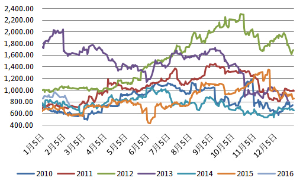

新闻中心


农产品做多发愁？首选近月多豆油
中国春节期间金融市场巨震，全球股市集体重挫、新兴经济体货币大幅贬值，商品市场也遭遇集体抛售，美豆倒是“处变不惊”，既没有被原油拖累的大跌，也未有大涨，仍是淡定的走着自己的步伐，二月份的供需报告缺乏亮点，对国内豆粕未有提振。在刚刚过去的2015年，豆油全年的跌势只有0.35％，在国内的大宗商品中只逊于白糖和强麦，是油脂油料系列中最为抗跌的品种。
2016年不论厄尔尼诺还是拉尼娜天气炒作，油脂在天气方面的炒作一直都是投资者津津乐道的话题。在棕榈油即将迎来需求回暖的节点，做多首选究竟是豆油还是棕榈油成了投资者需要面对的选择。
历史数据可窥豆棕价差上半年逐级攀升
对比豆棕2010年以来这7年的价差可以清晰的发现，除了2012年全年价差是明显上升（因那年美国大旱，美豆暴涨，豆油涨幅远大过棕榈油），几乎每年的二者价差在上半年呈现步步走高，下半年就就转成了走“下坡路”。
豆棕价差七年值

在每年9、10月份后，美豆成为全球大豆市场供给的主要力量，国内港口库存快速攀升，这对豆油无异形成了巨大的压力；而马来西亚棕榈油会在11月进入减产期，对应国内港口的库存会呈现出相对低位徘徊的态势。期货盘面明显提前在10月份反映出来，因此棕榈油的现货好于豆油就不言而喻。到了第二年上半年五月南美大豆上市之前，一般来说二三月份南美大豆播种机借炒作天气，四月份收获季节炒作罢工，洗船的节点，此时豆油的基本面明显强于棕榈油，在这样的格局下，豆棕价差上半年豆油期价走势明显好于棕榈，价差节节高也就是顺理成章了。
菜籽油库存压力释放支撑豆油
反观我国国内油菜籽种植面积连年萎缩，总产量也持续下降，也愈发依赖进口。从去年12月份我国启动了2015年第二轮的临储菜籽油抛售，综合九次临储菜油成交来看，成交量以及成交价呈现震荡上行态势，且元旦过后成交依然向好。尽管短期来看菜籽临储抛售对市场而言增加了供给，中长期而言，国内菜籽停止收储，菜油库存只会越来越少，对于油脂来说是库存压力逐渐释放的过程。菜籽油与豆油期价走势相关性较高，这样来看对豆油的也是变相的支撑。
二者价差有望触底反弹
豆棕价差近一个月缩窄了160点左右，二者价差目前在740附近，2015年全年价差均值在850附近，预计后期将缓慢反弹，保守投资者可进行买豆油1605卖棕榈1605的套利。
综上，国内A股市场年后有复苏的迹象，外部环境的影响已有所减弱。商品抗跌性将逐步体现，反弹时机料将随时来临。对于油脂板块而言，尽管马棕油走势较强，但国内棕榈油库存高企仍是不争的事实，豆粕现货低迷导致油厂更倾向于挺油卖粕，加上豆油为近强远弱，棕榈油为近弱远强，做多可选择豆油1605合约，在期价靠近20日线时布局；若要做多棕榈油首选为远月1609合约，可在4880附近布局。
下一篇：食用油如何吃 “花心”更健康
所属类别： 行业新闻
该资讯的关键词为：